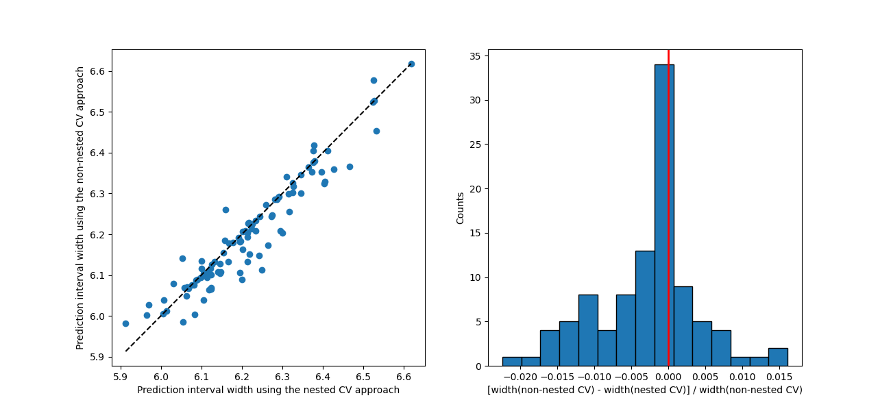

Note
Click here to download the full example code
Hyperparameters tuning with cross-conformal regression¶
This example compares non-nested and nested cross-validation strategies
when using
CrossConformalRegressor.
In the regular sequential method, a cross-validation parameter search is performed on the entire training set. The best model is then used in MAPIE to estimate prediction intervals. However, as MAPIE computes residuals on the validation dataset used during hyperparameter tuning, it can lead to overfitting. This fools MAPIE into being slightly too optimistic with confidence intervals.
To solve this problem, an alternative option is to perform a nested
cross-validation parameter search directly within the MAPIE estimator on each
out-of-fold dataset.
This ensures that residuals seen by MAPIE are never seen by the algorithm
beforehand. However, this method is much heavier computationally since
it results in N * P calculations, where N is the number of
out-of-fold models and P the number of parameter search cross-validations,
versus N + P for the non-nested approach.
Here, we compare the two strategies on a toy dataset.
The two approaches give slightly different predictions with the nested CV approach estimating larger prediction interval in average.
For this example, the two approaches result in identical scores and identical effective coverages.
In the general case, the recommended approach is to use nested cross-validation, since it does not underestimate conformity scores and hence prediction intervals. However, in this particular example, effective coverages of both nested and non-nested methods are the same.

Out:
Scores and effective coverages for the CV+ strategy using the Random Forest model.
Score on the test set for the non-nested and nested CV approaches: 1.311, 1.311
Effective coverage on the test set for the non-nested and nested CV approaches: 0.990, 0.990
import matplotlib.pyplot as plt
import numpy as np
from scipy.stats import randint
from sklearn.datasets import make_sparse_uncorrelated
from sklearn.ensemble import RandomForestRegressor
from sklearn.metrics import root_mean_squared_error
from sklearn.model_selection import RandomizedSearchCV, train_test_split
from mapie.metrics.regression import regression_coverage_score
from mapie.regression import CrossConformalRegressor
RANDOM_STATE = 42
# Load the toy data
X, y = make_sparse_uncorrelated(500, random_state=RANDOM_STATE)
# Split the data into training and test sets.
X_train, X_test, y_train, y_test = train_test_split(
X, y, test_size=0.2, random_state=RANDOM_STATE
)
# Define the Random Forest model as base regressor with parameter ranges.
rf_model = RandomForestRegressor(random_state=RANDOM_STATE, verbose=0)
rf_params = {"max_depth": randint(2, 10), "n_estimators": randint(10, 100)}
# Cross-validation and prediction-interval parameters.
cv = 10
n_iter = 5
confidence_level = 0.95
# Non-nested approach with the CV+ strategy using the Random Forest model.
cv_obj = RandomizedSearchCV(
rf_model,
param_distributions=rf_params,
n_iter=n_iter,
cv=cv,
scoring="neg_root_mean_squared_error",
return_train_score=True,
verbose=0,
random_state=RANDOM_STATE,
n_jobs=-1,
)
cv_obj.fit(X_train, y_train)
best_est = cv_obj.best_estimator_
mapie_non_nested = CrossConformalRegressor(
estimator=best_est,
method="plus",
cv=cv,
n_jobs=-1,
confidence_level=confidence_level,
random_state=RANDOM_STATE,
)
mapie_non_nested.fit_conformalize(X_train, y_train)
y_pred_non_nested, y_pis_non_nested = mapie_non_nested.predict_interval(
X_test, aggregate_predictions="median"
)
widths_non_nested = y_pis_non_nested[:, 1, 0] - y_pis_non_nested[:, 0, 0]
coverage_non_nested = regression_coverage_score(y_test, y_pis_non_nested)[0]
score_non_nested = root_mean_squared_error(y_test, y_pred_non_nested)
# Nested approach with the CV+ strategy using the Random Forest model.
cv_obj = RandomizedSearchCV(
rf_model,
param_distributions=rf_params,
n_iter=n_iter,
cv=cv,
scoring="neg_root_mean_squared_error",
return_train_score=True,
verbose=0,
random_state=RANDOM_STATE,
n_jobs=-1,
)
mapie_nested = CrossConformalRegressor(
estimator=cv_obj,
method="plus",
cv=cv,
n_jobs=-1,
confidence_level=confidence_level,
random_state=RANDOM_STATE,
)
mapie_nested.fit_conformalize(X_train, y_train)
y_pred_nested, y_pis_nested = mapie_nested.predict_interval(
X_test, aggregate_predictions="median"
)
widths_nested = y_pis_nested[:, 1, 0] - y_pis_nested[:, 0, 0]
coverage_nested = regression_coverage_score(y_test, y_pis_nested)[0]
score_nested = root_mean_squared_error(y_test, y_pred_nested)
# Print scores and effective coverages.
print(
"Scores and effective coverages for the CV+ strategy using the Random Forest model."
)
print(
"Score on the test set for the non-nested and nested CV approaches: ",
f"{score_non_nested: .3f}, {score_nested: .3f}",
)
print(
"Effective coverage on the test set for the non-nested and nested CV approaches: ",
f"{coverage_non_nested: .3f}, {coverage_nested: .3f}",
)
# Compare prediction interval widths.
fig, (ax1, ax2) = plt.subplots(1, 2, figsize=(13, 6))
min_x = np.min([np.min(widths_nested), np.min(widths_non_nested)])
max_x = np.max([np.max(widths_nested), np.max(widths_non_nested)])
ax1.set_xlabel("Prediction interval width using the nested CV approach")
ax1.set_ylabel("Prediction interval width using the non-nested CV approach")
ax1.scatter(widths_nested, widths_non_nested)
ax1.plot([min_x, max_x], [min_x, max_x], ls="--", color="k")
ax2.axvline(x=0, color="r", lw=2)
ax2.set_xlabel("[width(non-nested CV) - width(nested CV)] / width(non-nested CV)")
ax2.set_ylabel("Counts")
ax2.hist(
(widths_non_nested - widths_nested) / widths_non_nested,
bins=15,
edgecolor="black",
)
plt.show()
Total running time of the script: ( 0 minutes 30.177 seconds)
Download Python source code: plot_nested-cv.py